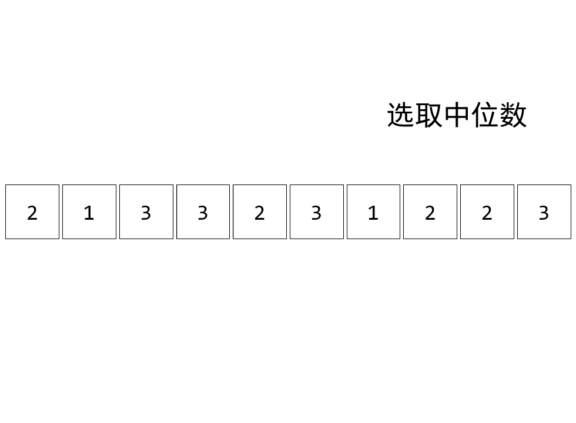
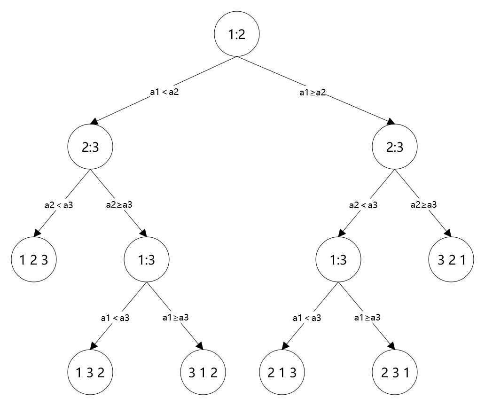
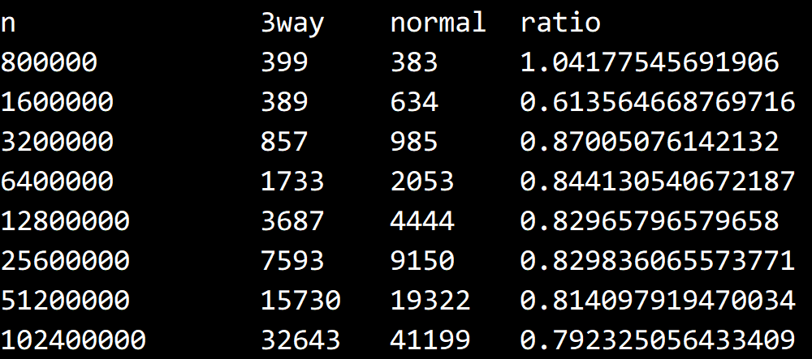

搜索解答
目前已完成到 2.5
2.3.22
上次更新：2019-02-13
发现了题解错误/代码缺陷/排版问题？请点这里：如何：提交反馈 。
题目
2.3.22
快速三向切分。（J.Bently，D.McIlroy）
用将重复元素放置于子数组两端的方式实现一个信息量最优的排序算法。
使用两个索引 p 和 q，使得 a[lo…p-1] 和 a[q+1..hi] 的元素都和 a[lo] 相等。
使用另外两个索引 i 和 j，使得 a[p…i-1] 小于 a[lo]，a[j+i..q] 大于 a[lo]。
在内循环中加入代码，在 a[i] 和 v 相等时将其与 a[p] 交换（并将 p 加 1），
在 a[j] 和 v 相等且 a[i] 和 a[j] 尚未和 v 进行比较之前将其与 a[q] 交换。
添加在切分循环结束后将和 v 相等的元素交换到正确位置的代码，如图 2.3.6 所示。
请注意：
这里实现的代码和正文中给出的代码时等价的，
因为这里额外的交换用于和切分元素相等的元素，
而正文中的代码将额外的交换用于和切分元素不等的元素。
解答
官方实现见：https://algs4.cs.princeton.edu/23quicksort/QuickBentleyMcIlroy.java.html
快速三向切分
论文引用见「另请参阅」部分。
算法演示

Ninther 算法
官方实现中用到了 Ninther 算法用于选取近似中位数（作为枢轴），
该算法由 John Tukey 在 1978 年提出，论文引用见「另请参阅」部分。
这个算法的思想其实很简单，假设我们有三个数 $ y_1, y_2, y_3 $ ，那么其中位数为：
$$
y_A= {\rm median}\lbrace y_1,y_2,y_3 \rbrace
$$
现在对于九个数，我们以三个为一组，取三个中位数：
$$
y_A= {\rm median}\lbrace y_1,y_2,y_3 \rbrace \\
y_B= {\rm median}\lbrace y_4,y_5,y_6 \rbrace \\
y_C= {\rm median}\lbrace y_7,y_8,y_9 \rbrace
$$
接下来取这三个中位数的中位数，有：
$$
y_E= {\rm median}\lbrace y_A,y_B,y_C \rbrace
$$
我们把上述过程封装成函数，即 $ y_E= {\rm ninther}\lbrace y_1,y_2,\cdots,y_9 \rbrace $ 。
于是我们获得的 $ y_E $ 即为近似中位数，如果 $ \lbrace y_1,y_2,\cdots,y_9 \rbrace $ 是单调数列，那么 $ y_E $ 就是中位数。
获取三个数中的中位数
事实上，我们可以直接画出三个数排列的所有可能，获得决策树。

然后根据决策树写出取中位数的算法：
private int Median3<T>(T[] a, int i, int j, int k) where T : IComparable<T>
{
return
(Less(a[i], a[j]) ?
(Less(a[j], a[k]) ? j : Less(a[i], a[k]) ? k : i) :
(Less(a[k], a[j]) ? j : Less(a[k], a[i]) ? k : i));
}
测试结果
提高约 20% 左右的性能。

代码
QuickBentleyMcIlroy
using System;
using System.Diagnostics;
namespace Quick
{
public class QuickBentleyMcIlroy : BaseSort
{
/// <summary>
/// 小于这个数值的数组调用插入排序。
/// </summary>
private readonly int INSERTION_SORT_CUTOFF = 8;
/// <summary>
/// 小于这个数值的数组调用中位数作为枢轴。
/// </summary>
private readonly int MEDIAN_OF_3_CUTOFF = 40;
/// <summary>
/// 默认构造函数。
/// </summary>
public QuickBentleyMcIlroy() { }
/// <summary>
/// 用快速排序对数组 a 进行升序排序。
/// </summary>
/// <typeparam name="T">需要排序的类型。</typeparam>
/// <param name="a">需要排序的数组。</param>
public override void Sort<T>(T[] a)
{
Sort(a, 0, a.Length - 1);
Debug.Assert(IsSorted(a));
}
/// <summary>
/// 对指定范围内的数组进行排序。
/// </summary>
/// <typeparam name="T">需要排序的类型。</typeparam>
/// <param name="a">需要排序的数组。</param>
/// <param name="lo">排序的起始下标。</param>
/// <param name="hi">排序的终止下标。</param>
private void Sort<T>(T[] a, int lo, int hi) where T : IComparable<T>
{
int n = hi - lo + 1;
if (n <= this.INSERTION_SORT_CUTOFF)
{
InsertionSort(a, lo, hi);
return;
}
else if (n <= this.MEDIAN_OF_3_CUTOFF)
{
// 对于较小的数组，直接选择左中右三个元素中的中位数作为枢轴。
int m = Median3(a, lo, lo + n / 2, hi);
Exch(a, m, lo);
}
else
{
// 对于较大的数组使用 Turkey Ninther 作为枢轴。
int eps = n / 8;
int mid = lo + n / 2;
int m1 = Median3(a, lo, lo + eps, lo + eps + eps);
int m2 = Median3(a, mid - eps, mid, mid + eps);
int m3 = Median3(a, hi - eps - eps, hi - eps, hi);
int ninther = Median3(a, m1, m2, m3);
Exch(a, ninther, lo);
}
// 三向切分
int i = lo, j = hi + 1;
int p = lo, q = hi + 1;
T v = a[lo];
while (true)
{
while (Less(a[++i], v))
if (i == hi)
break;
while (Less(v, a[--j]))
if (j == lo)
break;
if (i == j && IsEqual(a[i], v))
Exch(a, ++p, i);
if (i >= j)
break;
Exch(a, i, j);
if (IsEqual(a[i], v))
Exch(a, ++p, i);
if (IsEqual(a[j], v))
Exch(a, --q, j);
}
i = j + 1;
for (int k = lo; k <= p; k++)
Exch(a, k, j--);
for (int k = hi; k >= q; k--)
Exch(a, k, i++);
Sort(a, lo, j);
Sort(a, i, hi);
}
/// <summary>
/// 判断两个元素是否值相等。
/// </summary>
/// <typeparam name="T">需要判断的元素类型。</typeparam>
/// <param name="a">进行比较的第一个元素。</param>
/// <param name="b">进行比较的第二个元素。</param>
/// <returns>两个元素的值是否相等。</returns>
private bool IsEqual<T>(T a, T b) where T : IComparable<T>
{
return a.CompareTo(b) == 0;
}
/// <summary>
/// 用插入排序对指定范围内的数组排序。
/// </summary>
/// <typeparam name="T">数组的元素类型。</typeparam>
/// <param name="a">需要排序的数组。</param>
/// <param name="lo">排序的起始下标。</param>
/// <param name="hi">排序的终止下标。</param>
private void InsertionSort<T>(T[] a, int lo, int hi) where T : IComparable<T>
{
for (int i = lo; i <= hi; i++)
{
for (int j = i; j > lo && Less(a[j], a[j - 1]); j--)
{
Exch(a, j, j - 1);
}
}
}
/// <summary>
/// 获取三个元素中的中位数。
/// </summary>
/// <typeparam name="T">用于排序的元素。</typeparam>
/// <param name="a">需要排序的数组。</param>
/// <param name="i">第一个待选元素的下标。</param>
/// <param name="j">第二个待选元素的下标。</param>
/// <param name="k">第三个待选元素的下标。</param>
/// <returns></returns>
private int Median3<T>(T[] a, int i, int j, int k) where T : IComparable<T>
{
return
(Less(a[i], a[j]) ?
(Less(a[j], a[k]) ? j : Less(a[i], a[k]) ? k : i) :
(Less(a[k], a[j]) ? j : Less(a[k], a[i]) ? k : i));
}
}
}
测试用例
using System;
using Quick;
namespace _2._3._22
{
/*
* 2.3.22
*
* 快速三向切分。（J.Bently，D.McIlroy）
* 用将重复元素放置于子数组两端的方式实现一个信息量最优的排序算法。
* 使用两个索引 p 和 q，使得 a[lo...p-1] 和 a[q+1..hi] 的元素都和 a[lo] 相等。
* 使用另外两个索引 i 和 j，
* 使得 a[p...i-1] 小于 a[lo]，a[j+i..q] 大于 a[lo]。
* 在内循环中加入代码，在 a[i] 和 v 相当时将其与 a[p] 交换（并将 p 加 1），
* 在 a[j] 和 v 相等且 a[i] 和 a[j] 尚未和 v 进行比较之前将其与 a[q] 交换。
* 添加在切分循环结束后将和 v 相等的元素交换到正确位置的代码，如图 2.3.6 所示。
* 请注意：
* 这里实现的代码和正文中给出的代码时等价的，
* 因为这里额外的交换用于和切分元素相等的元素，
* 而正文中的代码将额外的交换用于和切分元素不等的元素。
*
*/
class Program
{
static void Main(string[] args)
{
QuickSort quickNormal = new QuickSort();
QuickBentleyMcIlroy quickBentleyMcIlroy = new QuickBentleyMcIlroy();
int arraySize = 800000; // 初始数组大小。
const int trialTimes = 1; // 每次实验的重复次数。
const int trialLevel = 8; // 双倍递增的次数。
Console.WriteLine("n\t\t3way\tnormal\tratio");
for (int i = 0; i < trialLevel; i++)
{
double timeBentleyMcIlroy = 0;
double timeNormal = 0;
for (int j = 0; j < trialTimes; j++)
{
int[] a = SortCompare.GetRandomArrayInt(arraySize);
int[] b = new int[a.Length];
a.CopyTo(b, 0);
timeNormal += SortCompare.Time(quickNormal, b);
timeBentleyMcIlroy += SortCompare.Time(quickBentleyMcIlroy, a);
}
timeBentleyMcIlroy /= trialTimes;
timeNormal /= trialTimes;
if (arraySize < 10000000)
Console.WriteLine(arraySize + "\t\t" + timeBentleyMcIlroy + "\t" + timeNormal + "\t" + timeBentleyMcIlroy / timeNormal);
else
Console.WriteLine(arraySize + "\t" + timeBentleyMcIlroy + "\t" + timeNormal + "\t" + timeBentleyMcIlroy / timeNormal);
arraySize *= 2;
}
}
}
}
另请参阅
有关这种快速排序算法的来源以及三个数的中位数的选取算法，请参阅下面这篇 1993 年的论文：
Bentley J L, McIlroy M D. Engineering a sort function[J]. Software: Practice and Experience, 1993, 23(11): 1249-1265.
下面这份 2002 年的 PPT 详细解释和分析了官方实现代码的思路和性能：
Sedgewick R, Bentley J. Quicksort is optimal[J]. Knuthfest, Stanford University, Stanford, 2002.
有关选取中位数 Ninther 算法，请参阅下面这篇 1978 年的论文：
Tukey J W. The ninther, a technique for low-effort robust (resistant) location in large samples[M]//Contributions to Survey Sampling and Applied Statistics. 1978: 251-257.
以及按照惯例给出本题用到的类库链接：
Quick 库